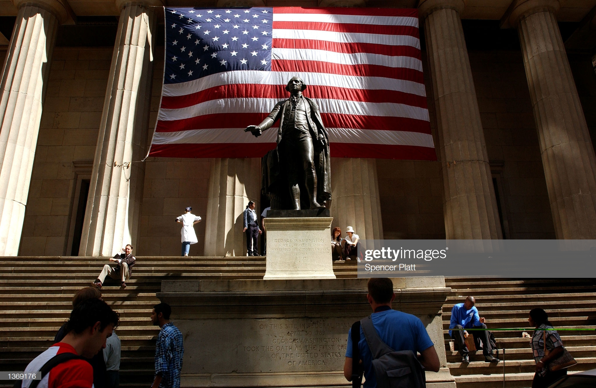

George Washington
General, President, Founding Father

George Washington, General of the Continental Army, and First President of the United States of America
Read, short timeline of George Washington's life
- 1732 On February 22 George Washington was
born at Pope's Creek Plantation in
Westmoreland County, Virginia. - 1749 Washington was appointed surveyor of Culpeper County at the age of 17.
-
1755 Washington served as aide-de-camp to
General Braddock during
the French and Indian War -
1775 Washington was selected to be the
commander-in-chief of the
Continental Army in the American Revolution -
1776 Washington pushed British out of Boston,
but loses New York
Conducts daring
Delaware River crossing on Christmas surprising Hessian mercenaries, takes New Jersey -
1783 Washington resigns as Commander-in-Chief after
victory at Yorktown - 1789 Washington takes Oath of Office to become First President of the United States
- 1799 Washington dies due to complications from a throat infection